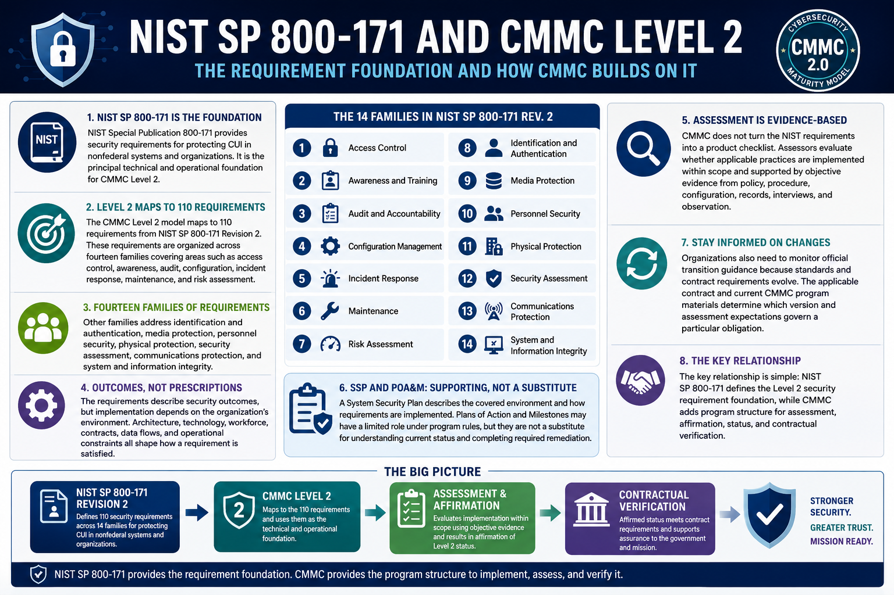

What Is CMMC 2.0?
Relationship to NIST SP 800-171
Connecting to LMS... Progress: in progress
Version 1.0 | Date: 2026-06-16 | Educational overview of CMMC 2.0 concepts.

Narration
NIST Special Publication 800-171 provides security requirements for protecting CUI in nonfederal systems and organizations. It is the principal technical and operational foundation for CMMC Level 2.
The CMMC Level 2 model maps to 110 requirements from NIST SP 800-171 Revision 2. These requirements are organized across fourteen families covering areas such as access control, awareness, audit, configuration, incident response, maintenance, and risk assessment.
Other families address identification and authentication, media protection, personnel security, physical protection, security assessment, communications protection, and system and information integrity.
The requirements describe security outcomes, but implementation depends on the organization's environment. Architecture, technology, workforce, contracts, data flows, and operational constraints all shape how a requirement is satisfied.
CMMC does not turn the NIST requirements into a product checklist. Assessors evaluate whether applicable practices are implemented within scope and supported by objective evidence from policy, procedure, configuration, records, interviews, and observation.
A System Security Plan describes the covered environment and how requirements are implemented. Plans of Action and Milestones may have a limited role under program rules, but they are not a substitute for understanding current status and completing required remediation.
Organizations also need to monitor official transition guidance because standards and contract requirements evolve. The applicable contract and current CMMC program materials determine which version and assessment expectations govern a particular obligation.
The key relationship is simple: NIST SP 800-171 defines the Level 2 security requirement foundation, while CMMC adds program structure for assessment, affirmation, status, and contractual verification.